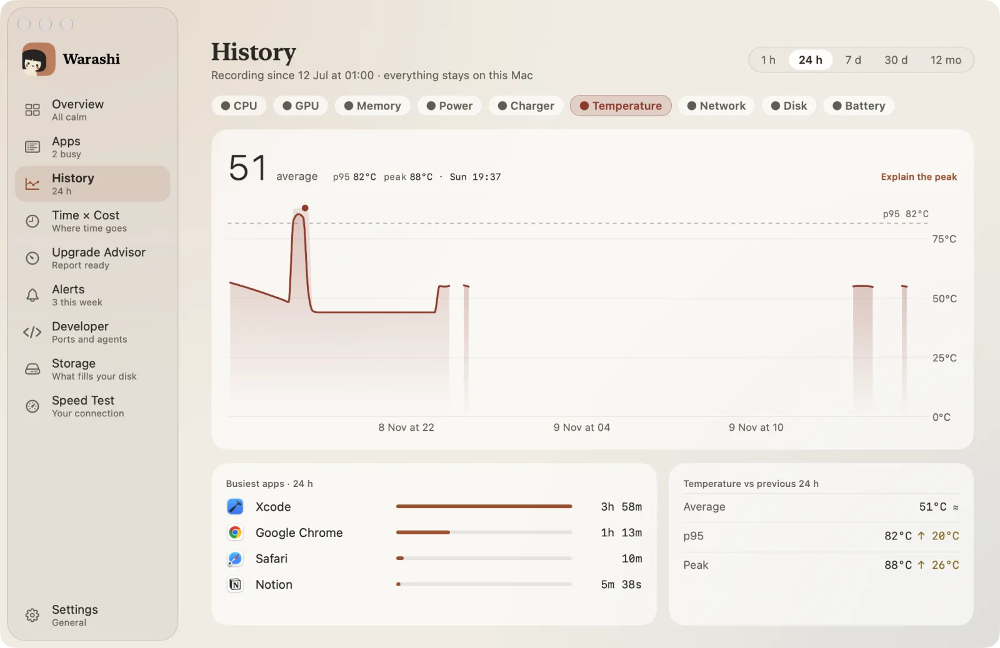
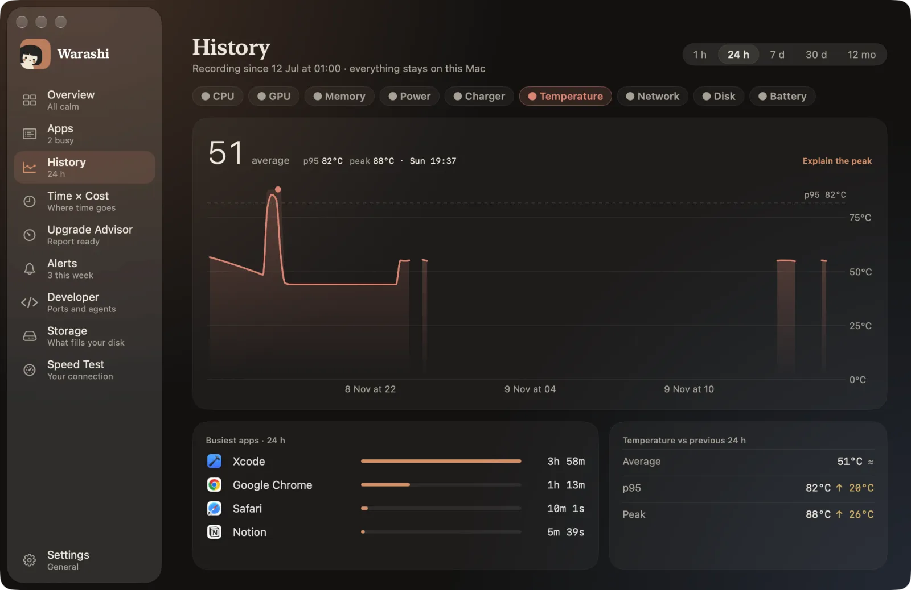

Macのファンが回り始め、底面が熱くなり、kernel_taskが突然CPUを大量に使うなら、Macは熱から自分を守っています。
kernel_taskの働き
kernel_taskはmacOS自身です。チップが熱くなりすぎると、macOSがkernel_taskを忙しく見せかけて、ほかのアプリに割り当てるCPU時間を減らし、チップを冷まします。原因ではなく、ブレーキです。終了することはできず、終了させたいものでもありません。
サーマルスロットリング
スロットリングとは、安全な温度を保つために、macOSがチップの速度を下げることです。ファンのないMacBook Airでは、書き出し、ビルド、ゲームのような長く重い作業で早めに起こります。ファン搭載のMacは、たいていフルスピードをより長く維持できます。
できること
- 実際に負荷をかけているアプリを見つけて（CPUとGPUで並べ替え）、一時停止するか終了します。
- 通気口をふさがず、Macの下に柔らかいものを敷かないでください。
- MacBook Airで長時間の重い作業をするときは、涼しい部屋やスタンドが役立ちます。
- 毎日起こるなら、作業にファン搭載のMacが必要かどうかを検討しましょう。
どれくらいの頻度で起きるかを把握する
Warashiは、Macが熱で速度を落としていた時間を分単位で記録します。Macの高温アラートは開始時にお知らせし、アップグレードアドバイザーはチップをおすすめするときに、1週間あたりのスロットリング時間を集計します。


Warashiが代わりに記録します。 バックグラウンドでMacの履歴を記録するので、リアルタイムで捕まえようとしなくても、何が起きたかをあとから振り返れます。無料ベータ版をダウンロード →